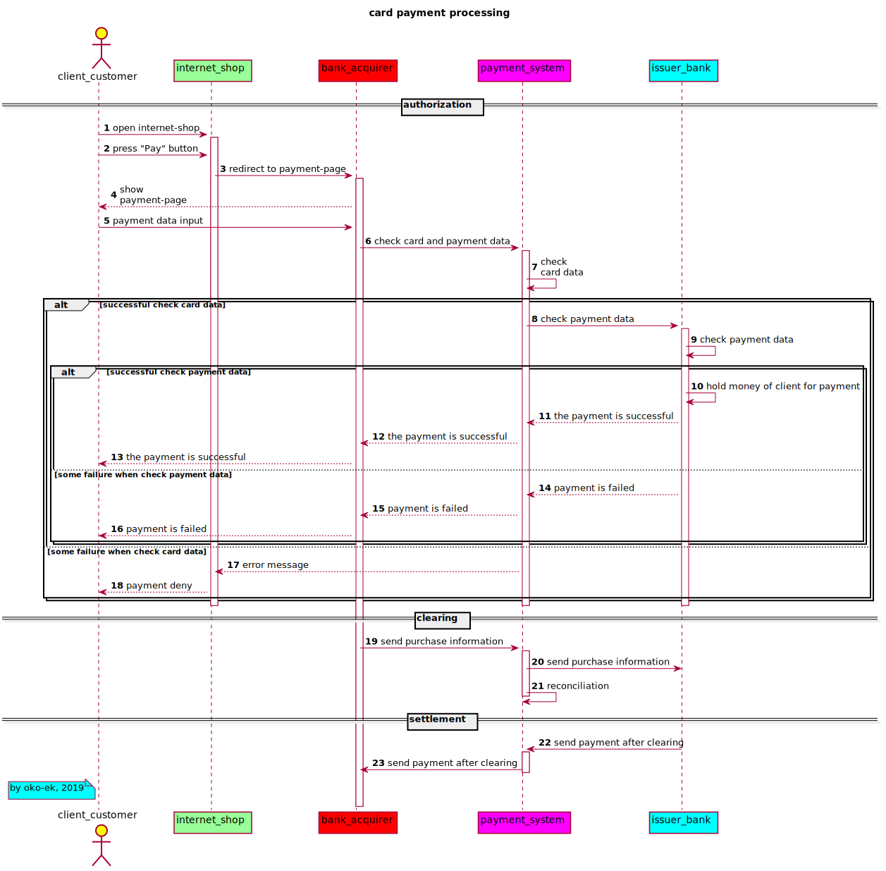

This is the page for demonstrating skills of: UML sequence-diagram creating.
Created with:
Source-code:
@startuml actor client_customer as client_customer #ffff00 /'the client of internet-shop'/ participant internet_shop as internet_shop #99ff99 participant bank_acquirer as bank_acquirer #ff0000 participant payment_system as payment_system #ff00ff participant issuer_bank as issuer_bank #00ffff autonumber title card payment processing == authorization == client_customer -> internet_shop: open internet-shop activate internet_shop client_customer -> internet_shop: press "Pay" button internet_shop -> bank_acquirer : redirect to payment-page activate bank_acquirer client_customer <-- bank_acquirer: show \npayment-page client_customer -> bank_acquirer: payment data input bank_acquirer -> payment_system: check card and payment data activate payment_system payment_system -> payment_system: check \ncard data alt successful check card data payment_system -> issuer_bank: check payment data activate issuer_bank issuer_bank -> issuer_bank: check payment data alt successful check payment data /'check payment data'/ issuer_bank -> issuer_bank: hold money of client for payment payment_system <-- issuer_bank: the payment is successful bank_acquirer <-- payment_system: the payment is successful client_customer <-- bank_acquirer: the payment is successful else some failure when check payment data /'check payment data'/ payment_system <-- issuer_bank: payment is failed bank_acquirer <-- payment_system: payment is failed client_customer <-- bank_acquirer: payment is failed end /'check payment data'/ else some failure when check card data /'check card data'/ internet_shop <-- payment_system: error message client_customer <-- internet_shop: payment deny end /'check card data'/ deactivate issuer_bank deactivate payment_system deactivate internet_shop == clearing == bank_acquirer -> payment_system: send purchase information activate payment_system payment_system -> issuer_bank: send purchase information payment_system -> payment_system: reconciliation deactivate payment_system == settlement == payment_system <- issuer_bank: send payment after clearing activate payment_system bank_acquirer <- payment_system: send payment after clearing deactivate payment_system note left of client_customer #aqua by oko-ek, 2019 end note @enduml